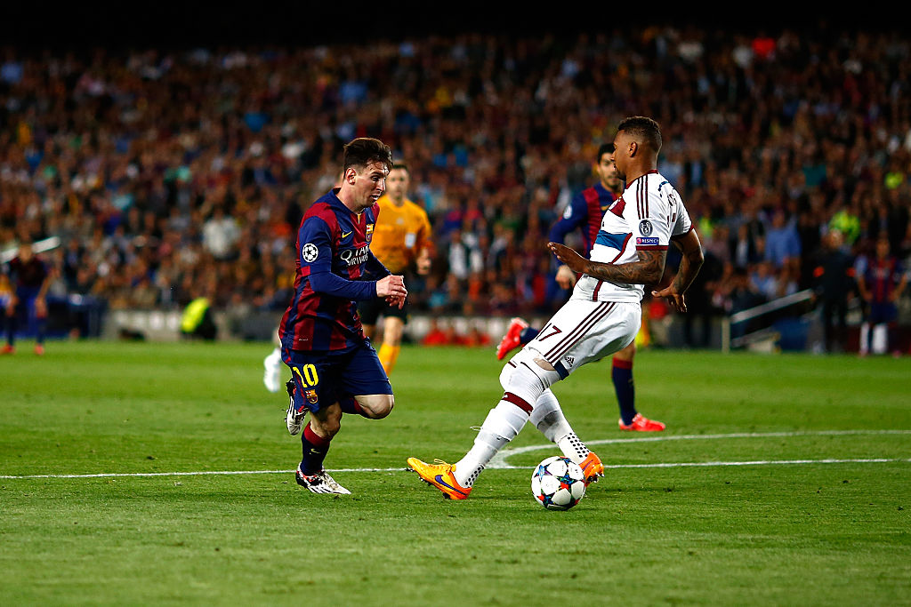

Is Soccer Losing its Excitement?
By Colin Morris | May 19, 2024
On my admittedly excessive use of soccer-related social media, I see consistent complaints about how “football fell off” or questions asking “what happened to the beautiful game?”. These frustrated statements are coming from premier league fans who believe that in the past few years, either the quality of the players or the quality of the overall game has taken a negative hit.
There are countless posts similar to the one above, with thousands of likes, criticizing soccer’s current condition. There’s no doubt that football has experienced a tactical revolution, but has the recent progression in soccer actually made the sport less fun to watch? Most of the contentions are based on intuition and personal viewing experience, but can these complaints be supported with statistics?
There are generally “exciting” and “boring” events that occur during a soccer match. Goals are exhilarating, while backwards passes tend to be thought of as dull. We can attempt to keep track of such events throughout the past few years and if they have decreased, it’s reasonable to assume that soccer has lost some of its excitement.
In order to account for the sheer offensive dominance of Manchester City, all of the counting statistics referenced are medians.
Take-ons:
A “Take-on” is defined as an attempt by a player in possession to dribble past an opponent. Lionel Messi’s iconic ankle-breaker against Jerome Boateng in the Champions League and Javier Mascherano’s game saving tackle against Arjen Robben in the World Cup would both be considered Take-ons. It’s the ultimate clash between attacker and defender and it’s more than fair to deem it as an entertaining part of soccer.
As the graph shows, the median attempted take ons per game has actually increased slightly throughout the past few years, illustrating the continued desire for players to beat their defender.
Expected Goals:
Expected goals (xG) are calculated using data from thousands of past shots to approximate the probability that a shot will result in a goal. A game with a high amount of xG is bound to be an exciting game with lots of opportunities for a goal.
As the graph demonstrates, xG and goals per game have stayed relatively constant, showing that there is no shortage of offense.
Shot Creating Actions:
Shot creating actions (SCA) are the 2 offensive actions that directly lead to a shot. Examples include an offensive player dribbling past their man, making an incisive pass, or drawing a foul in a dangerous area. They have also remained relatively constant throughout the past few years.
SCAs broadly signal a player making an effort to create a goal. It follows that there is a strong, positive correlation between a team’s SCAs per game and goals per game.
Backwards Passes:
A “boring” event often complained about is the dreaded backwards pass. Despite being a vital part of the game, viewers commonly interpret a pass backwards as a docile action compared to alternatives of a shot, a take-on, a progressive pass, etc. The median number of progressive passes among Premier League teams since 2010 has remained somewhat stagnant, which suggests players haven’t necessarily become more risk-averse.
The Interesting Case of Long Shots:
Mean shot distance has decreased from around 3 meters since 2010. Goals scored from outside the box have decreased as a result. However, the shot conversion rate since then has increased by 2 percent. In addition, the rate of goals per game still remains constant, so is this decrease in lengthy shots necessarily bad? Although long-range goals are incredible, they are extremely improbable, with many shots from outside the box resulting in ugly misses. There is nothing more infuriating than watching a player on your favorite team waste a promising attack by sending an ill-advised long shot into the 20th row. In contrast, closer shots pose more of a threat, so it’s arguable that they are the more nerve racking and thus, more entertaining shot to witness. Which is more likely to get you out of your seat, a shot from 6 yards out or 25 yards out?
Conclusion:
Based on the data, the Premier League isn’t suffering from a lack of quantifiable action. This begs a difficult question, why is soccer beginning to bore a subset of its fans? Perhaps the disconnect can be explained by nostalgia. As fans age, their perception of the past becomes somewhat warped, leading to an unfair comparison between the soccer that they remember to the soccer now. After all, a wide-eyed child is likely going to be more entertained by a sport than an adult.
On the other hand, it’s possible that soccer truly is losing its excitement and that many factors causing this are simply too hard to quantify. It’s conceivable that in a few years, new statistics are created that can better measure the general flow of a game and that those statistics lead to the conclusion that soccer has in fact become less entertaining. Nevertheless, goals continue to be scored and football’s global popularity continues to rise.